Modern Architectures
Large Language Models : A Hands-on Approach
Topics Covered
- GPT-2 Review
- Training Loop
- Modern LLM Architectures
- Norm Types
- Activation Functions
- Positional Encodings
- Attention Variants
- Hyperparameters
Recap : GPT-2 Architecture

Recap : GPT-2 Training Loop
During Training we update model weights to minimize loss through backpropagation and gradient descent.
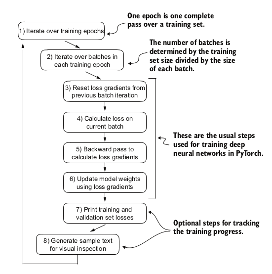
Training Loop in code
Loading and Saving Model Weights
We must save trained models to:
- Avoid retraining
- Share models with others
- Resume training later
- Deploy to production
# ============ SAVE ============
torch.save(model.state_dict(), "model.pth")
# Save model + optimizer (for resuming training)
torch.save({
"model_state_dict": model.state_dict(),
"optimizer_state_dict": optimizer.state_dict(),
}, "model_and_optimizer.pth")
# ============ LOAD ============
# Load weights into fresh model
model = GPTModel(GPT_CONFIG_124M)
model.load_state_dict(torch.load("model.pth", map_location=device))
model.eval() # Set to evaluation mode
# Resume training
checkpoint = torch.load("model_and_optimizer.pth", map_location=device)
model = GPTModel(GPT_CONFIG_124M)
model.load_state_dict(checkpoint["model_state_dict"])
optimizer = torch.optim.AdamW(model.parameters(), lr=5e-4, weight_decay=0.1)
optimizer.load_state_dict(checkpoint["optimizer_state_dict"])
model.train() # Set to training modeModern Architectures
GPT-2 Architecture
Position embedding: learned, absolute
FFN: GELU
\[ \text{FFN}(x) = GELU(xW_1 + b_1)W_2 + b_2 \]
Norm type: Pre-Norm, LayerNorm
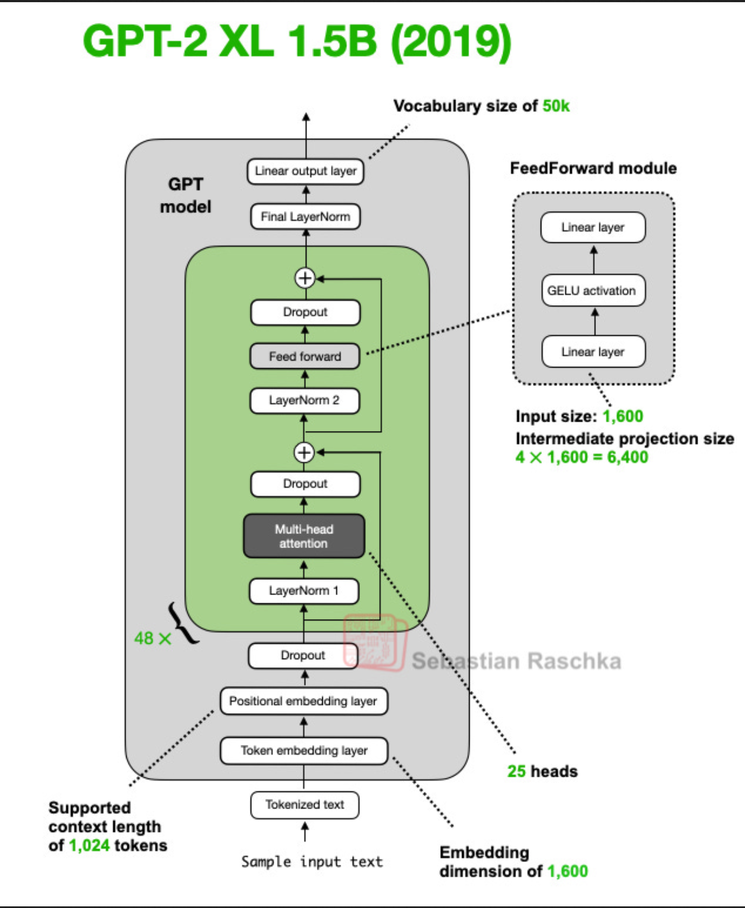
Current Models
source: Modern LLM Architectures
Llama 2, Llama 3 and Qwen 3 Architectures
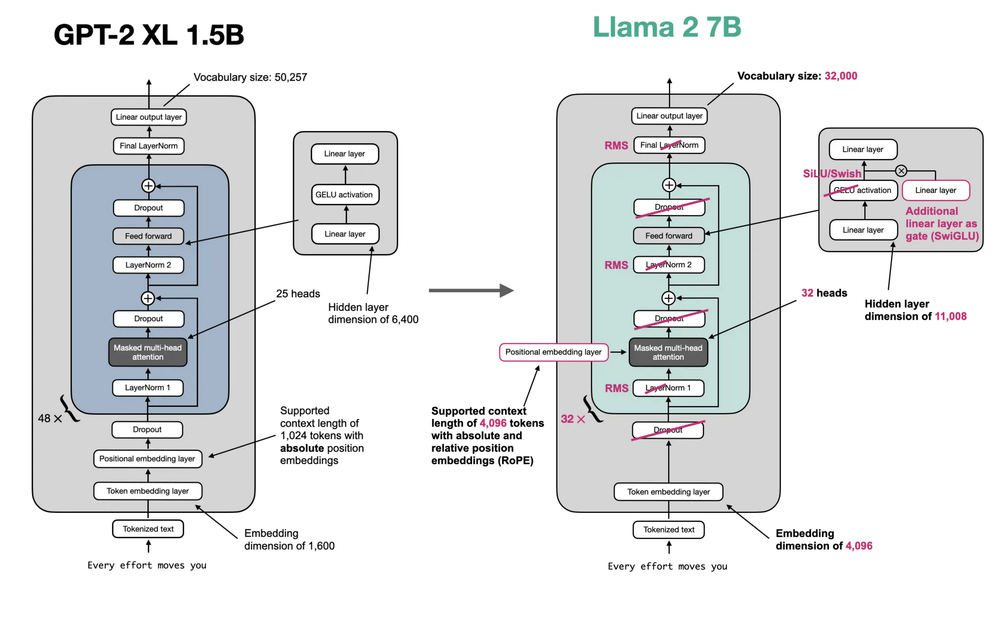
Position embedding: RoPE (rotary position embeddings)
FFN: *GLU variant (SwiGLU for LLaMA, GeGLU for Qwen)
Norm type: Pre-Norm, RMSNorm
Llama 2, Llama 3 and Qwen 3 Architectures
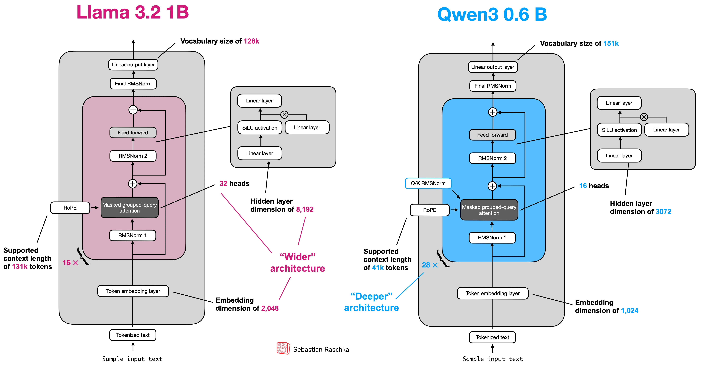
Position embedding: RoPE (rotary position embeddings)
FFN: *GLU variant (SwiGLU for LLaMA, GeGLU for Qwen)
Norm type: Pre-Norm, RMSNorm
Pre-Norm vs Post-Norm
Almost all models post-2020 use pre-norm.
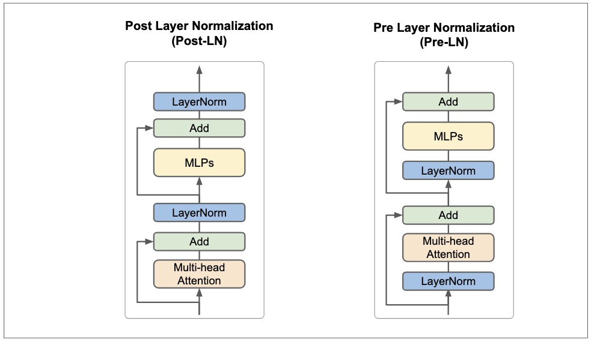
Original Transformer : Post Norm
x -> Attention(x) -> Add -> LayerNorm -> FFN -> Add -> LayerNorm
GPT 2 : Pre-Norm
x -> [LN -> Attn] -> +x -> [LN -> FFN] -> +x
Pre-Norm vs Post-Norm
Why pre-norm wins:
- Better gradient flow through residual connections.
- Practical evidence: almost all modern LLMs use pre-norm
Note : Double norm also used in some models, but not as common as pre-norm. It applies LayerNorm both before and after the sub-layer.
Question : BERT was trained with post-norm and it was huge success. But most models use pre-norm. Why?
Ref : Xiong et al. 2020, On Layer Normalization in the Transformer Architecture
LayerNorm vs RMSNorm
Strong consensus toward RMSNorm
LayerNorm (original):
Normalize by subtracting mean and dividing by std dev, then scale (\(\gamma\)) and shift (\(\beta\)):
\[y = \frac{x - E[x]}{\sqrt{Var[x] + \epsilon}} \cdot \gamma + \beta\]
Models : GPT-1/2/3, OPT, GPT-J, BLOOM
RMSNorm (modern):
Drop the mean subtraction and bias term:
\[y = \frac{x}{\sqrt{\frac{1}{n}||x||_2^2 + \epsilon}} \cdot \gamma\]
Models : LLaMA family, DeepSeek V3, Qwen3 etc
Why RMSNorm
- Fewer operations: RMSNorm requires fewer computations (no mean subtraction, no bias term) which reduces both FLOPs and memory bandwidth.
Dropping Bias Terms in FFN and LayerNorm
Most modern transformers have no bias terms in linear layers or LayerNorm.
Original: \(FFN(x) = \max(0, xW_1 + b_1)W_2 + b_2\)
Modern: \(FFN(x) = \sigma(xW_1)W_2\)
SiLU activation is used instead of ReLU, but the key point is that bias terms are removed.
Reasons:
- Same memory/data movement argument as RMSNorm – fewer parameters to load
- Optimization stability – empirically, dropping bias terms stabilizes training of very large networks
LayerNorm Recap
- Most models use RMSNorm
- Almost all models use pre-norm
Activations & Gated Linear Units (Strong trend toward SwiGLU/GeGLU)
Evolution of activations:
| Activation | Formula | Notable Models |
|---|---|---|
| ReLU | \(FF(x) = \max(0, xW_1)W_2\) | Original transformer, T5, Gopher, OPT |
| GeLU | \(FF(x) = GELU(xW_1)W_2\) where \(GELU(x) = x\Phi(x)\) | GPT-1/2/3, GPT-J, BLOOM |
| SwiGLU | \(FF(x) = (Swish(xW) \otimes xV)W_2\) | LLaMA 1/2/3, PaLM, Mistral, most post-2023 |
| GeGLU | \(FF(x) = (GELU(xW) \otimes xV)W_2\) | T5 v1.1, mT5, Phi3, Gemma 2/3 |
where Swish(x) = x * sigmoid(x) and \(\otimes\) is elementwise multiplication.
Gated Linear Units (GLU)
What do GLUs do?
- GLUs add a gating mechanism
- Hidden representation element-wise multiplied by a gate \(xV\) (learned linear projection)
- \(xV\) controls information flow through the MLP
\[\text{Standard:} \quad \sigma(xW_1) \rightarrow \sigma(xW_1) \otimes (xV) \quad \text{(gated)}\]
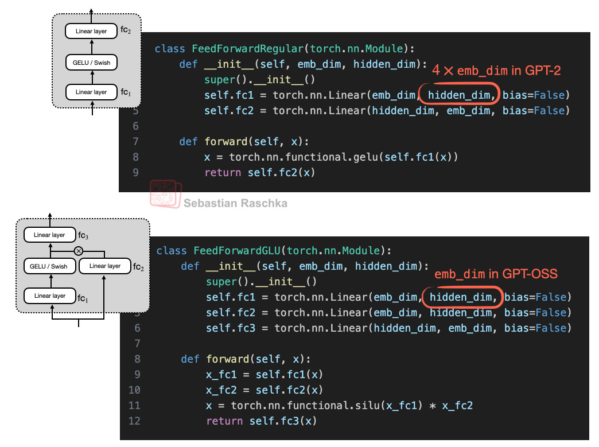
Gated Linear Units (GLU)
More number of parameters?
The extra parameter V means GLU models have 3 weight matrices (W, V, W2) instead of 2.
How to keep parameter count the same? (memory is the real bottleneck, not compute)
Gated Linear Units (GLU)
More number of parameters?
The extra parameter V means GLU models have 3 weight matrices (W, V, W2) instead of 2.
How to keep parameter count the same? (memory is the real bottleneck, not compute)
Scale the FF Params
Gated Linear Units (GLU)
More number of parameters?
The extra parameter V means GLU models have 3 weight matrices (W, V, W2) instead of 2.
How to keep parameter count the same? (memory is the real bottleneck, not compute)
Scale the FF Params
- Standard MLP
- \(W_1 \in \mathbb{R}^{d \times d_{ff}}\) + \(W_2 \in \mathbb{R}^{d_{ff} \times d}\) = \(2 \cdot d \cdot d_{ff}\) params
- Total FFN params = \(2 \cdot d \cdot 4 d\) = \(8 \cdot d^2\).
Gated Linear Units (GLU)
More number of parameters?
The extra parameter V means GLU models have 3 weight matrices (W, V, W2) instead of 2.
How to keep parameter count the same? (memory is the real bottleneck, not compute)
Scale the FF Params
- Standard MLP
- \(W_1 \in \mathbb{R}^{d \times d_{ff}}\) + \(W_2 \in \mathbb{R}^{d_{ff} \times d}\) = \(2 \cdot d \cdot d_{ff}\) params
- Total FFN params = \(2 \cdot d \cdot 4 d\) = \(8 \cdot d^2\).
- Gated MLP:
- \(W \in \mathbb{R}^{d \times d_{ff}}\) + \(V \in \mathbb{R}^{d \times d_{ff}}\) + \(W_2 \in \mathbb{R}^{d_{ff} \times d}\) = \(3 \cdot d \cdot d_{ff}\) params.
Gated Linear Units (GLU)
More number of parameters?
The extra parameter V means GLU models have 3 weight matrices (W, V, W2) instead of 2.
How to keep parameter count the same? (memory is the real bottleneck, not compute)
Scale the FF Params
- Standard MLP
- \(W_1 \in \mathbb{R}^{d \times d_{ff}}\) + \(W_2 \in \mathbb{R}^{d_{ff} \times d}\) = \(2 \cdot d \cdot d_{ff}\) params
- Total FFN params = \(2 \cdot d \cdot 4 d\) = \(8 \cdot d^2\).
- Gated MLP:
- \(W \in \mathbb{R}^{d \times d_{ff}}\) + \(V \in \mathbb{R}^{d \times d_{ff}}\) + \(W_2 \in \mathbb{R}^{d_{ff} \times d}\) = \(3 \cdot d \cdot d_{ff}\) params.
- To match:
- set \(d_{ff}^{gated} = \frac{2}{3} d_{ff}^{standard} = \frac{2}{3} \cdot 4d = \frac{8}{3}d\).
- Total FFN params = \(3 \cdot d \cdot \frac{8}{3}d = 8 \cdot d^2\).
Scaling Factors:
- Standard MLP: \(d_{ff} = 4 \cdot d\)
- Gated MLP: \(d_{ff} = \frac{8}{3} \cdot d \approx 2.67 \cdot d\)
Serial vs Parallel Layers
Normal transformer blocks are serial – they compute attention, then the MLP
Standard transformer block can be written as:
\[y = x + \text{MLP}(\text{LayerNorm}(x + \text{Attention}(\text{LayerNorm}(x)))\]
Whereas the parallel formulation can be written as:
\[y = x + \text{MLP}(\text{LayerNorm}(x)) + \text{Attention}(\text{LayerNorm}(x))\]
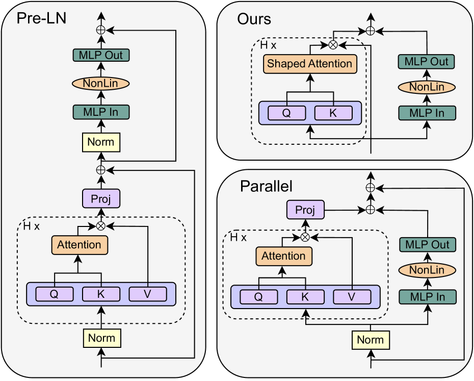
Position Encodings
Evolution:
| Type | How it works | Models |
|---|---|---|
| Sinusoidal | Add fixed sin/cos to embedding | Original Transformer |
| Absolute (learned) | Add learned position vector \(u_i\) to embedding | GPT-1/2/3, OPT |
| Relative | Add learned bias to attention scores | T5, Gopher, Chinchilla |
| ALiBi | Linear attention bias | BLOOM |
| NoPE | No position embedding at all | SmolLM3, Kimi Linear |
| RoPE | Rotate query/key vectors | GPT-J, PaLM, LLaMA, all 2024+ models |
Position Encodings
Why do we need Position Encodings?
Attention is a position-agnostic operation
- Treats the input as a set, not a sequence
- No inherent notion of order or position
Example:
The dog chased another dog vs Another dog chased the dog
- Both have the same set of tokens
- But different meanings
Solution: Add positional encodings to inject order information into the model
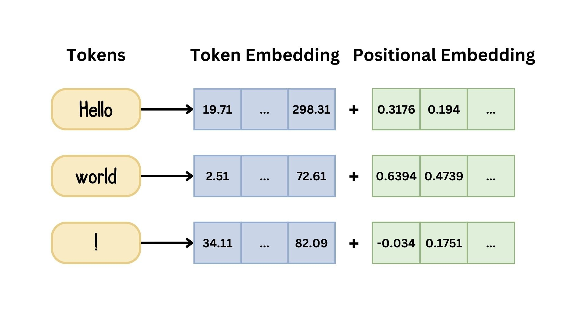
Integer Position Encoding
- Add the integer position directly into embeddings.
- Problems:
- Position encoding magnitude greater than token embedding magnitude
- Model should separately learn to handle content and position, which can make learning harder.
Binary Position Encoding
Binary Position Encoding
Problems:
- Hamming distance artifacts
- Sparse representations (most bits are zero, which can make learning harder)
- No lernable interpolation
Sinusoidal Position Encoding
\[ PE_{(pos,2i)} = sin(pos/10000^{2i/d_{\text{model}}}) \]
\[ PE_{(pos,2i+1)} = cos(pos/10000^{2i/d_{\text{model}}}) \]
Sinusoidal Position Encoding
Why sin and cos?
\(sin(a+b) = sin(a)cos(b) + cos(a)sin(b)\)
\(cos(a+b) = cos(a)cos(b) - sin(a)sin(b)\)
PE(pos+k) is a linear function of PE(pos)
So
\[ \begin{aligned} \sin(\omega \cdot (p+k)) &= \sin(\omega p)\cos(\omega k) + \cos(\omega p)\sin(\omega k) \end{aligned} \]
\[ \begin{aligned} \cos(\omega \cdot (p+k)) &= \cos(\omega p)\cos(\omega k) - \sin(\omega p)\sin(\omega k) \end{aligned} \]
Sinusoidal Position Encoding
Downsides :
Sinusoidal PE is added to embeddings: \(x_p = x_{token} + PE(p)\)
Then projected: \(q_p = W_q x_p\), \(k_p = W_kx_p\)
- Position and content are entangled before attention
- Relative position is implicit, not structural
- Attention must learn how to extract distance
Absolute vs Relative Position Encodings
Absolute position encodings - Unique encoding to each position in the sequence.
Relative position encodings - Encodes the relative distance between tokens, rather than their absolute position.
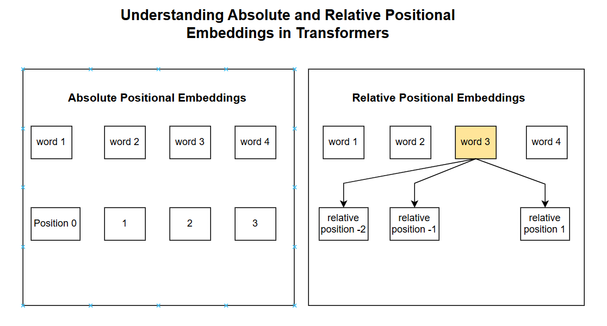
Absolute vs Relative Position Encodings
Why do we need them?
“The cat sat” should have similar relationships whether at positions [5,6,7] or [105,106,107]
Absolute encodings make it harder to learn patterns based on relative distance (e.g., “the word two positions to the left of X”)
Benefits:
- Learn patterns based on relative distance between tokens
- More important for many tasks than absolute position
- No reliance on fixed absolute positions
Relative Position Encoding Example
Example sentence: “The dog chased another dog”
When attending from position 2 (“chased”):
| Position | Token | Absolute | Relative to pos 2 |
|---|---|---|---|
| 0 | The | 0 | -2 |
| 1 | dog | 1 | -1 |
| 2 | chased | 2 | 0 (self) |
| 3 | another | 3 | +1 |
| 4 | dog | 4 | +2 |
Absolute vs Relative Position Encodings
In practice:
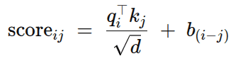
Key differences from absolute:
- Same relative pattern at any absolute position (e.g., “-1” always means “previous token”)
- Model learns one bias per relative distance, not per absolute position
Position Encoding : Desirable Properties
- Inject position information into the model
- Allow generalization to longer sequences than seen during training
- Facilitate learning of relative position patterns (e.g., “the word two positions to the left of X”)
- Be computationally efficient (not too many parameters or FLOPs)
- Be compatible with attention mechanism (e.g., allow position information to influence attention scores)
Rotary Position Embeddings (RoPE)
We want attention scores to depend only on relative position \((i - j)\), not absolute positions.
Mathematically, find \(f(x, i)\) such that:
\[\langle f(x, i), f(y, j) \rangle = g(x, y, i-j)\]
RoPE’s key idea:
- Instead of adding PE to the input
x, apply rotation to the query and key vectors based on their position. - Position information is directly encoded in the attention scores
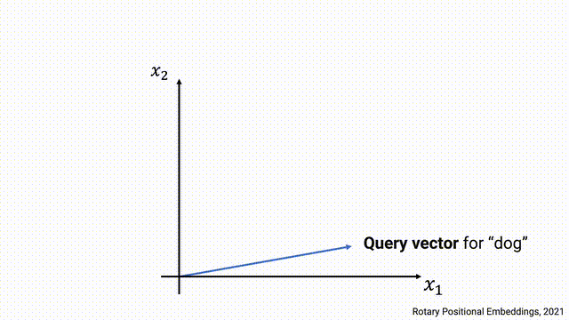
Encoding position as a rotation
Rotating a 2D vector by an angle \(\theta\)
\[ \begin{bmatrix} x' \\ y' \end{bmatrix} = \begin{bmatrix} \cos \theta & -\sin \theta \\ \sin \theta & \cos \theta \end{bmatrix} \begin{bmatrix} x \\ y \end{bmatrix} \]
Rotating a word vector
Given a word vector \(x = (x_1, x_2)\) at position \(m\), we can rotate it by an angle \(\theta_m\) to get the position-aware vector \(x'\):
\[ \begin{bmatrix} x'_1 \\ x'_2 \end{bmatrix} = \begin{bmatrix} \cos \theta_m & -\sin \theta_m \\ \sin \theta_m & \cos \theta_m \end{bmatrix} \begin{bmatrix} x_1 \\ x_2 \end{bmatrix} \]
Dot product of rotated vectors
Let’s rotate two vectors \(q\) and \(k\) by angles \(\theta_q\) and \(\theta_k\) respectively.
\(q' = R_{(\theta_q)} q\)
\(k' = R_{(\theta_k)} k\)
The dot product of the rotated vectors is:
\[\begin{aligned} q' \cdot k' &= (R(\theta_q) q) \cdot (R(\theta_k) k) \\ &= q^T R(\theta_q)^T R(\theta_k) k \\ &= q^T R(\theta_k - \theta_q) k \end{aligned}\]
Dot products depend only on relative rotation.
Now attention scores depend on : q, k, and the relative angle \((\theta_k - \theta_q)\), which encodes the relative position between the two tokens.
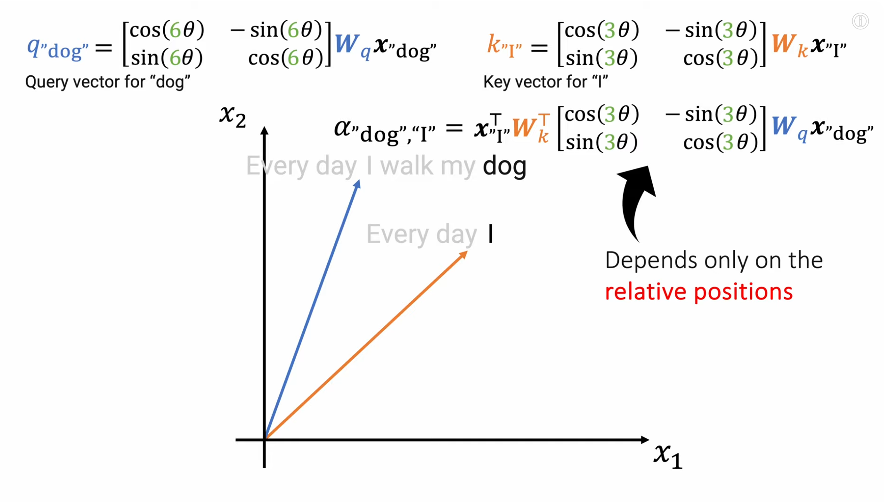
Rotations in higher dimensions
- In higher dimensions, we can apply rotations in multiple planes
- Example: In 4D space, rotate independently in \((x_1, x_2)\) plane and \((x_3, x_4)\) plane
- For a \(d\)-dimensional vector:
- Apply \(\frac{d}{2}\) independent rotations
- Each rotation has its own angle \(\theta_m\)
- Encodes position information compatible with attention mechanism
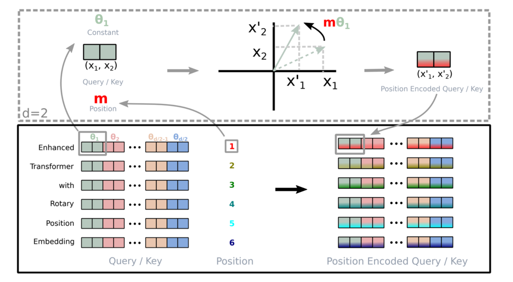
Rotations in higher dimensions
- Example: Model with hidden dimension \(d = 512\)
- Apply 256 independent rotations
- Each pair of dimensions gets rotated by different frequency
- Creates a rich positional representation
Rotation in m dimensions
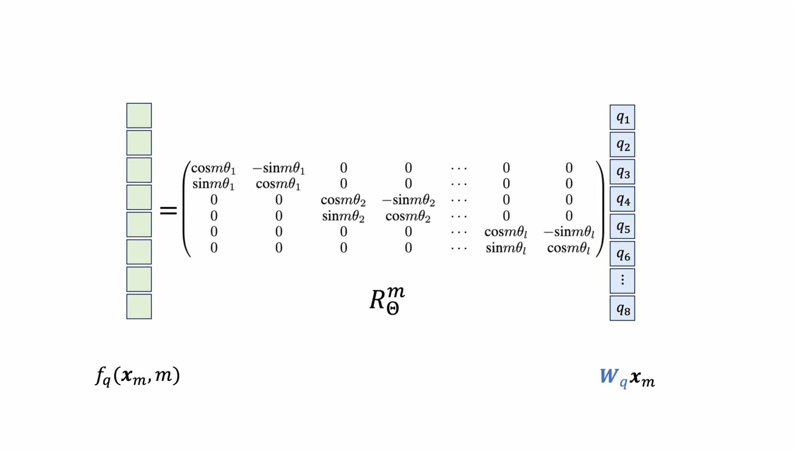
Rotation in m dimensions
\(\theta_i = B^{-2i/d} \quad \text{where } B \text{ is the base (typically 10000)}\)
The wavelength of dimension \(i\) is:
\[\lambda_i = \frac{2\pi}{\theta_i} = 2\pi \cdot B^{2i/d}\]
This creates a geometric progression of wavelengths:
- Shortest wavelength (highest freq, \(i=0\)): \(\lambda_{\min} = 2\pi \approx 6.28\) tokens
- Longest wavelength (lowest freq, \(i=d/2-1\)): \(\lambda_{\max} = 2\pi \cdot B \approx 62,832\) tokens (when \(B=10000\))
RoPE Summary
Core Formula:
For a vector \(x\) at position \(m\), RoPE applies rotation:
\[f(x, m) = R_{\Theta,m} \cdot x\]
where \(R_{\Theta,m}\) is a block-diagonal rotation matrix with \(d/2\) independent 2D rotations.
Rotation for dimension pair \((2i, 2i+1)\):
\[ \begin{bmatrix} x'_{2i} \\ x'_{2i+1} \end{bmatrix} = \begin{bmatrix} \cos(m\theta_i) & -\sin(m\theta_i) \\ \sin(m\theta_i) & \cos(m\theta_i) \end{bmatrix} \begin{bmatrix} x_{2i} \\ x_{2i+1} \end{bmatrix} \]
Frequency schedule: \(\theta_i = B^{-2i/d}\) where \(B = 10000\) (base)
RoPE Summary
Key property - relative position encoding:
\[\langle R_{\Theta,m} \cdot q, R_{\Theta,n} \cdot k \rangle = q^T R_{\Theta,(n-m)} k\]
Attention scores depend only on relative position \((n - m)\), not absolute positions.
Computing Attention with RoPE
Key implementation details:
- Precompute frequencies: Calculate \(\theta_i = 10000^{-2i/d}\) for all dimension pairs once
- Apply once per forward pass: Rotate Q and K by position-dependent angles
- No extra parameters: RoPE is fully deterministic, no learned weights
Other Hyperparameters
- How many attention heads?
- How many layers?
- Hidden dimension size?
- FFN dimension size?
- Vocab size?
Other Hyperparameters
FFN Dimensions
- Typical FFN dimension is 4x the hidden dimension (\(d_{ff} = 4 \cdot d_{model}\))
- in GLU variants (SwiGLU, GeGLU), use 2/3 scaling to keep parameter count same
Number of attention heads
- Common choices are 16, 32, or 64 heads for large models.
- The number of heads is often chosen to be a divisor of the hidden dimension for simplicity (e.g., 512 hidden dimension with 16 heads means each head has 32 dimensions).
Vocabulary size
Monolingual models: 30-50K tokens (Original Transformer: 37K, GPT-2/3: 50K, LLaMA 1/2: 32K, LLaMA 3: 128K)
Multilingual/Production: 100-250K tokens (GPT-4: 100K, PaLM: 256K, Qwen: 152K, Command A: 255K)
Efficient Attention Variants
MHA Overview
\(\text{Attention}(Q, K, V) = \text{softmax}\left(\frac{QK^T}{\sqrt{d_k}}\right)V\)
\[ \text{MultiHead}(Q, K, V) = \text{Concat}(\text{head}_1, \dots, \text{head}_h)W^O \]
- Scaled Dot-Product Attention:
- \(Q, K, V\): Query, Key, and Value matrices derived from input embeddings
- \(d_k\): The dimensionality of the keys (and queries)
- \(W^O\): Output projection matrix that combines the outputs of all heads into a single vector.
- \(h\): The number of parallel attention heads.
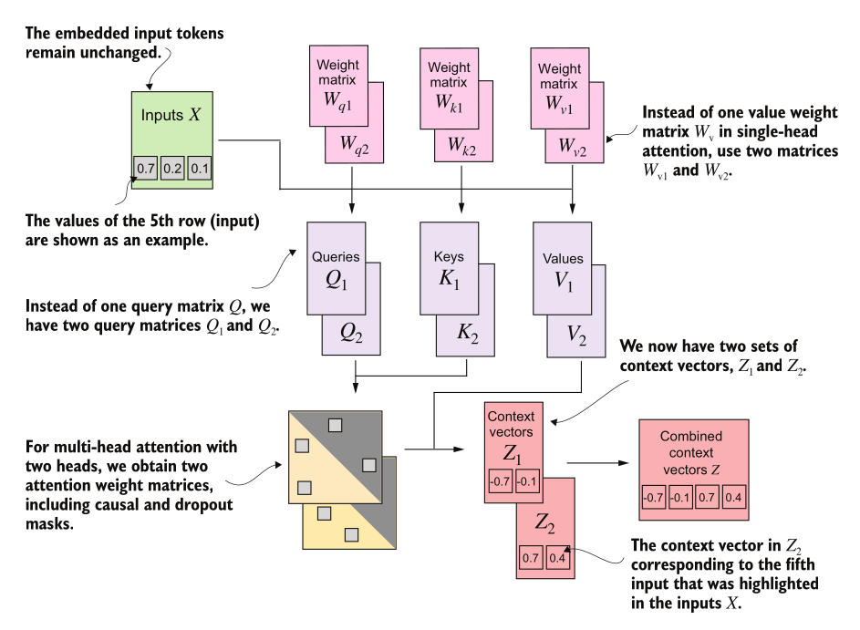
MHA - Generation Phase
Generation Phase (Autoregressive Decoding):
- Generate tokens one at a time autoregressively
- At each step, compute attention over all previously generated tokens
- Keys and Values for past tokens remain unchanged
- Only the new token’s Query needs to attend to all previous Keys/Values
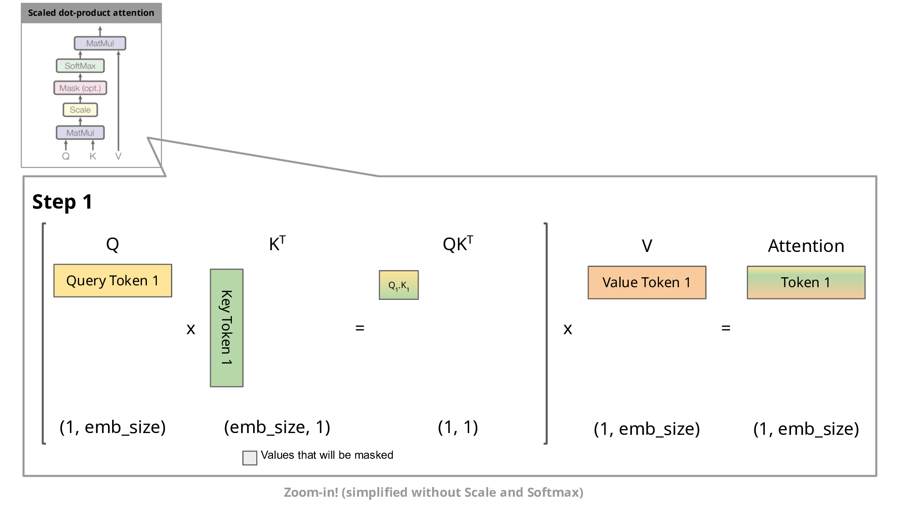
MHA - Generation Phase
Problem: Without caching, we recompute K and V for all previous tokens at every step!
- Step 1: Compute K, V for token 1
- Step 2: Recompute K, V for tokens 1, 2
- Step 3: Recompute K, V for tokens 1, 2, 3
- …
- Step N: Recompute K, V for all N tokens → O(N²) redundant computation
Solution: KV Cache — Store computed K and V vectors and reuse them
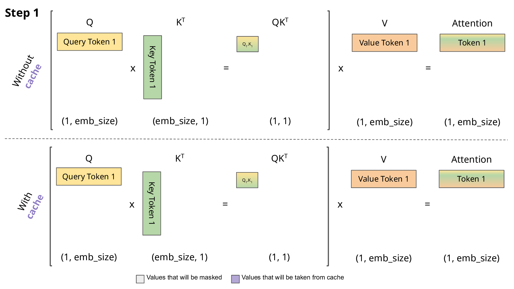
KV Cache Memory Usage
KV Cache size needed for MHA:
| Parameter | Value |
|---|---|
| KV head dim | 128 |
| Sequence length | 32,768 |
| Num KV heads | 128 |
Per-layer calculation:
\[\text{KV cache} = \text{seq_len} \times \text{num_heads} \times \text{head_dim} \times 2 \times 2\]
\[= 32768 \times 128 \times 128 \times 2 \times 2 = \textbf{2.14 GB per layer}\]
Total for 61 layers: ~ 131 GB (~ 4 MB per token)
| Attention Type | Memory per Token |
|---|---|
| MHA | 4 MB |

Solution: Reduce KV heads to 1 (MQA) or use more efficient attention variants (GQA, MLA)
Multi-Query Attention (MQA)
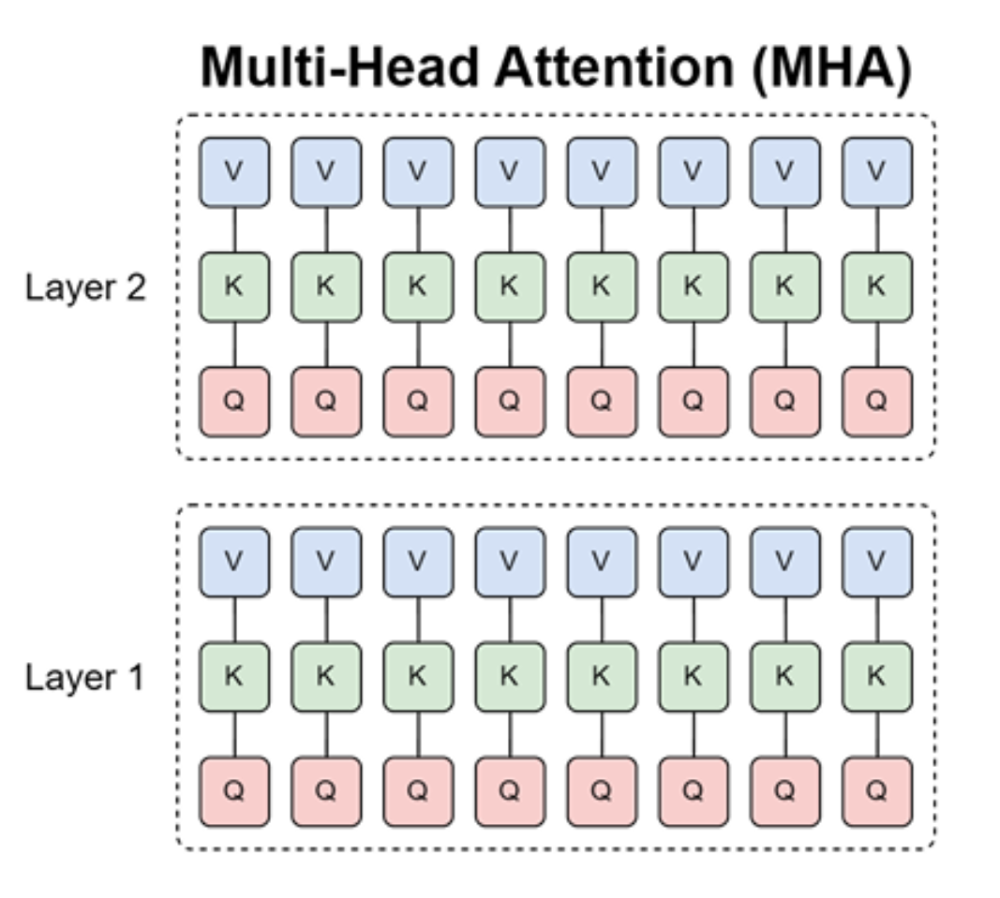

Key Insight: Reduce number of KV heads to 1 = MQA (Multi-Query Attention)
\[\text{KV Cache} = 32768 \times 128 \times 1 \times 2 \times 2 = \textbf{16 MB per layer}\]
For all 61 layers: ~1 GB total (~32 KB per token)
128× reduction in KV cache memory!
| Attention Type | Memory per Token |
|---|---|
| MHA | 4 MB |
| MQA | 32 KB |
Grouped-Query Attention (GQA)

Key Insight: Use 1 KV head for each group of query heads (e.g., 1 KV head for 8 query heads)
- Balance between MHA (full expressivity) and MQA (maximum efficiency)
- If 8 Query heads share 1 KV head
| Attention Type | Memory per Token |
|---|---|
| MHA | 4 MB |
| MQA | 32 KB |
| GQA | 500 KB |
8× reduction compared to MHA, while preserving more expressivity than MQA
Multi-head Latent Attention (MLA)
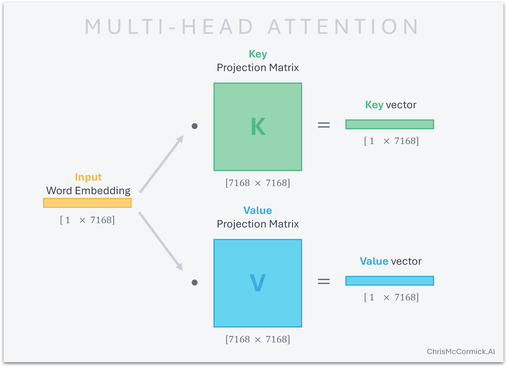

Key Insight: Compress K and V into a low-dimensional latent vector before caching
- Project hidden states into a compressed latent representation \(c^{KV}\) (e.g., 512 dims)
- Cache only the compressed latent, not full K and V
- Reconstruct K and V from latent during attention computation
DeepSeek V3 MLA
KV Cache size for MLA (DeepSeek V3):
| Parameter | Value |
|---|---|
| KV compression dim (\(d_c\)) | 512 |
| RoPE dim (\(d_r\)) | 64 |
| Sequence length | 32,768 |
Per-layer calculation:
\[\text{MLA cache} = \text{seq\_len} \times (d_c + d_r) \times 2\]
\[= 32768 \times (512 + 64) \times 2 = \textbf{37.7 MB per layer}\]
Total for 61 layers: ~ 2.3 GB (~ 70 KB per token)
| Attention Type | Memory per Token |
|---|---|
| MHA | 4 MB |
| MQA | 32 KB |
| GQA (8 groups) | 500 KB |
| MLA | 70 KB |
~57× reduction compared to MHA, ~7× reduction compared to GQA
QK-Norm (Attention Softmax Stability)
Concept: Apply LayerNorm to Query (\(Q\)) and Key (\(K\)) vectors before computing dot-product attention.
LayerNorm has evolved from Post-Norm (Transformer) to Pre-Norm (GPT-2) and now directly into the attention mechanism (QK-Norm)
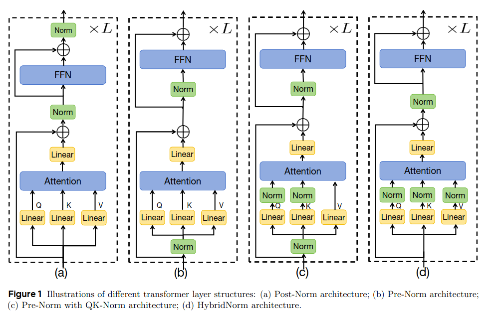